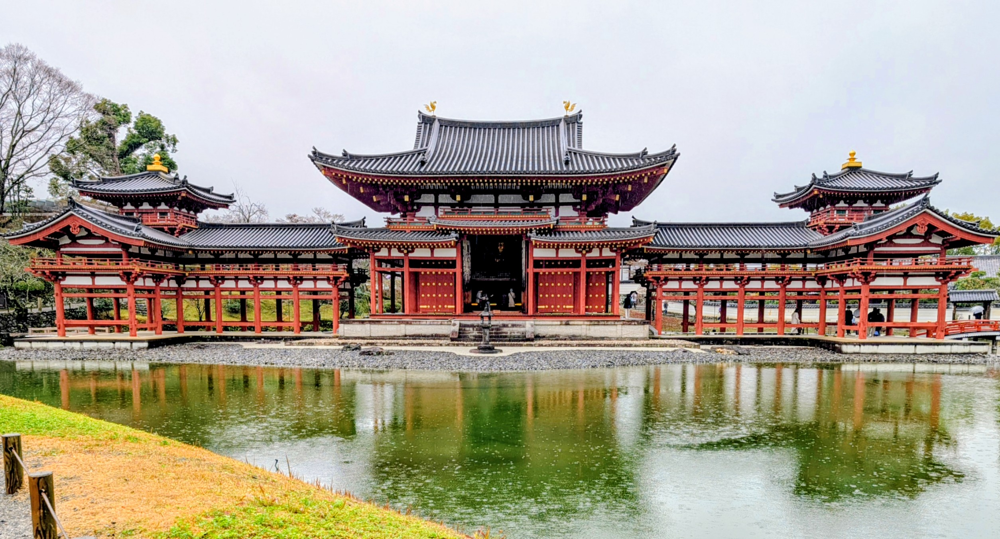
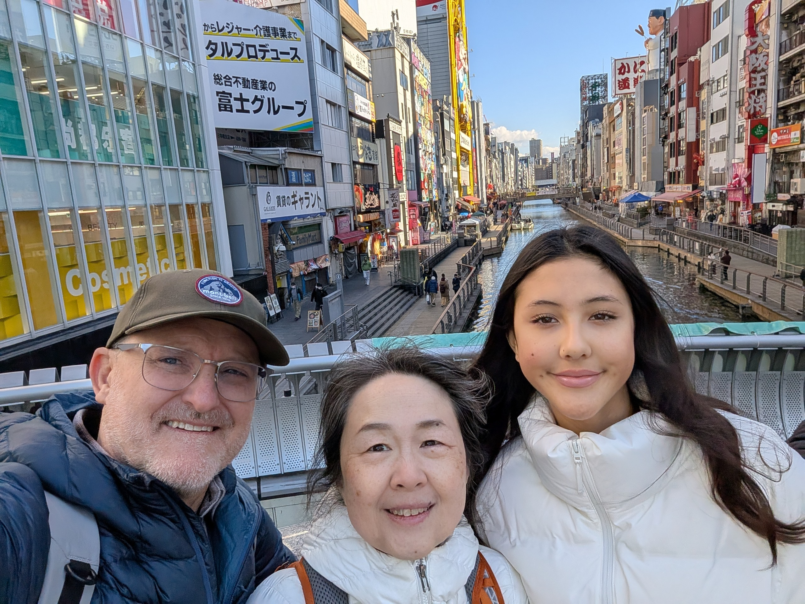
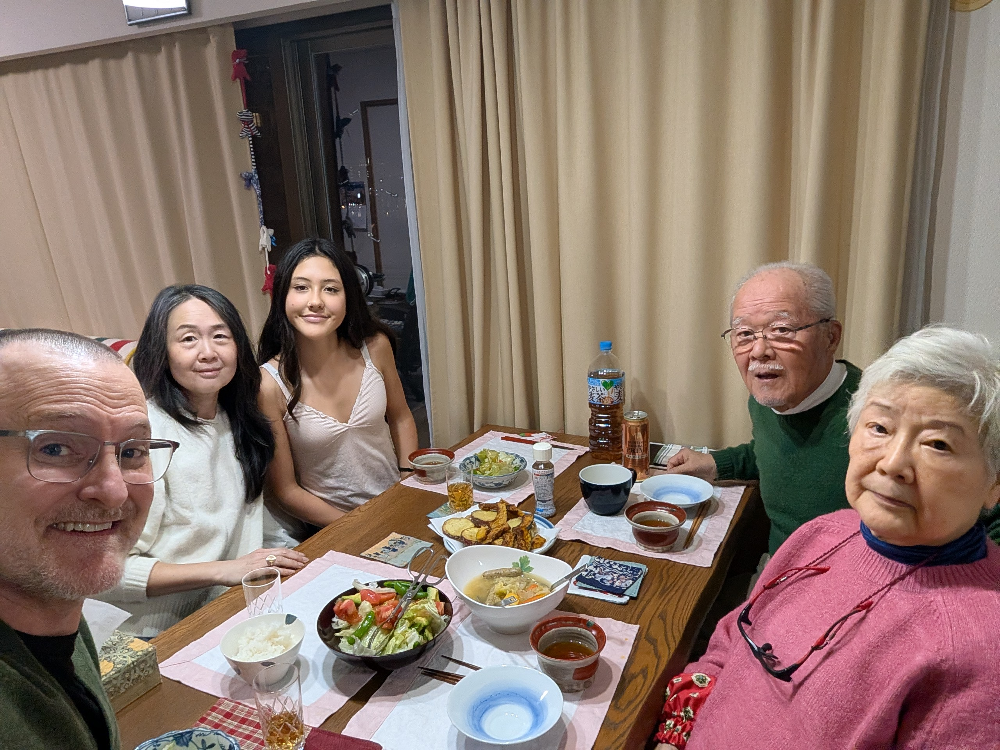
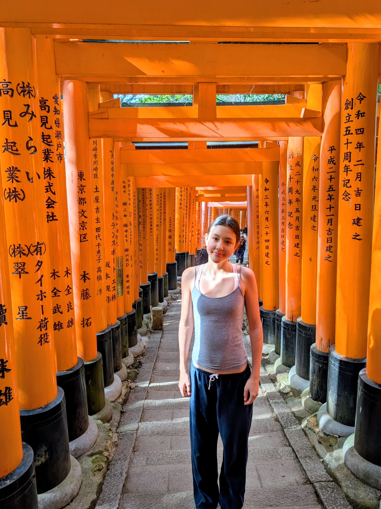
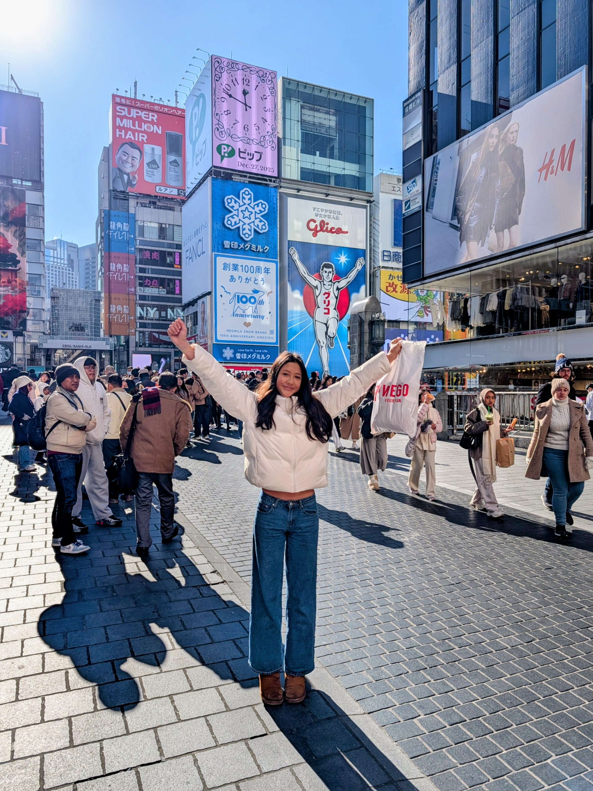
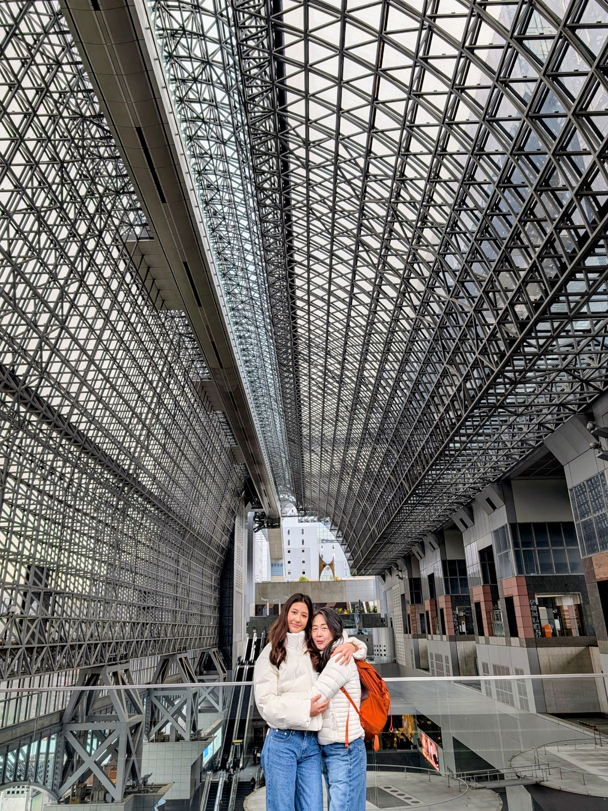
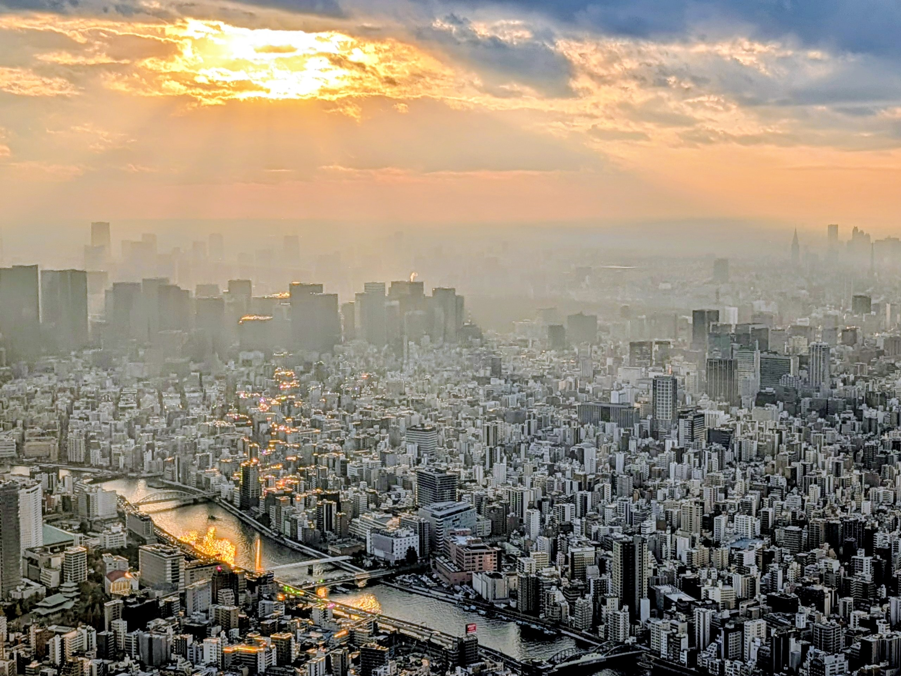
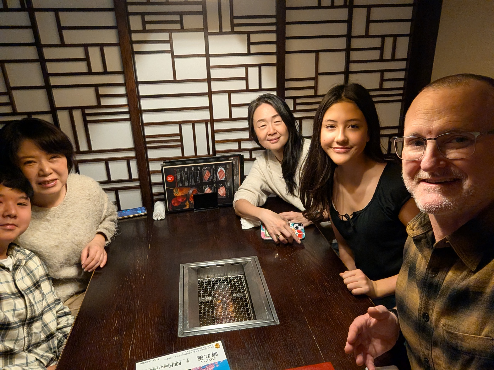

Japan Trip December 2025
This is an album of photos from our recent family trip to Japan in December 2025. Maiko had a great time visiting with old friends and family, and it was great for me (Tom) to visit some of my old stomping grounds. Things sure have changed since Maiko and I lived there in the early 2000s! There are so many more foreign visitors now!
Scroll down to see some of the photos from our trip, and click on any photo to see a larger version.

This is Byodo-in, a beautiful temple located in Uji, just south of Kyoto. It is a UNESCO World Heritage Site and is famous for its stunning architecture and serene gardens. It is also featured on the back of the 10 yen coin!

This is a picture of the Dotonbori Canal in Osaka. Sometimes baseball fans jump into the river here to celebrate when the Hanshin Tigers win!

A lovely dinner at Maiko's parents' house in Minami-Kusatsu, just ouside of Kyoto. Maiko's mom made tempura and salad, and it was delicious!

Here is a picture of Nina in the famous Fushimi Inari Shrine in Kyoto. The shrine is famous for its thousands of vermilion torii gates that line the paths up the mountain. It was founded in 711.

Here is a picture of Nina in front of the famous Glico Man billboard in Dotonbori, Osaka. The billboard has been a symbol of Osaka since 1935. Many people take photos in front of it.

Maiko and Nina are standing in front of the famous Kyoto Station Hall. You would never guess how crowded it is down below where they are standing.
Nina and I took a trip to Tokyo and visited the Ninja Samurai Museum. It was a lot of fun, and we got to see some cool ninja and samurai artifacts, as well as practice throwing shuriken (ninja stars).

I took this photo from the top of the Tokyo Skytree, which is the tallest structure in Japan. The city seems to go on forever in every direction.

We met Maiko's friend, Miyakura-san, for lunch at a yakiniku restaurant in Osaka. Yakiniku is a Japanese style of barbecue where you cook the meat yourself at the table.